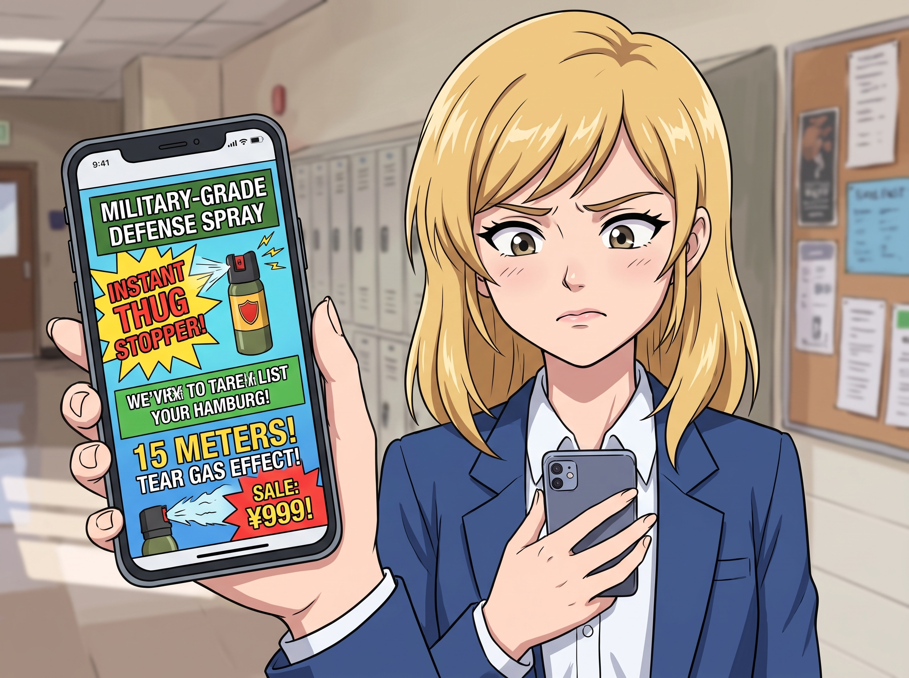
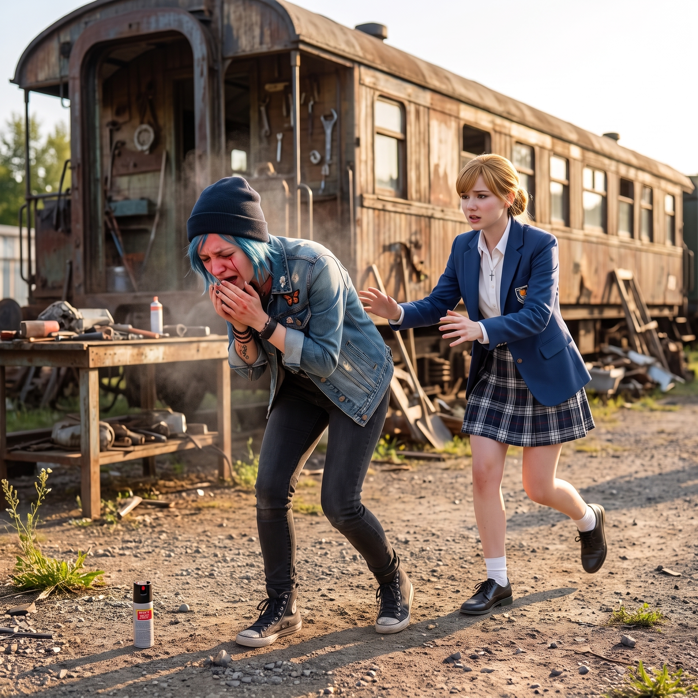

沒有辣度的辣椒水


市集那場口哨風波過後，Kate 這幾天心裡一直悶悶的。
她並不是害怕，只是那天被 Chloe 和 Victoria 前後護在中間、自己什麼都做不了的畫面，一直在她腦海裡揮之不去。她想起自己過去也曾經歷過類似的無力時刻——那種永遠需要別人挺身而出、自己卻只能站在原地的感覺。
「我也想能保護自己……或者，至少保護大家。」她一邊在心裡這樣想著，一邊漫無目的地滑著手機。
一、演算法的精準狙擊
不知道是不是手機的定位或者瀏覽紀錄出賣了她，接下來幾天，Kate 的社群動態裡開始密集出現各種標榜「軍用級」、「一噴撂倒歹徒」的防身噴霧廣告，包裝設計花花綠綠，價格便宜得離譜，廣告詞誇張到近乎荒誕——「本品噴射距離高達十五米，效果媲美催淚瓦斯，全球熱銷八百萬瓶」。
Kate 看著那則廣告，猶豫了很久。她沒有告訴任何人，怕大家覺得她小題大做，也怕被 Chloe 笑「妳一個大天使買這個幹嘛」。最終，她一個人默默點下了訂購按鈕，付了不到五塊錢，選了最便宜的到貨方式。
二、貨到與自願的實驗品
四天後，一個用廉價牛皮紙隨便包裹、印刷模糊到幾乎看不清字的包裹，寄到了工坊。
Kate 拆開包裹時，臉上帶著一種混雜著期待與心虛的表情，被路過的 Chloe 一眼逮個正著。
「這是什麼？」Chloe 湊過來，拿起那支輕飄飄、瓶身印著奇怪火焰圖案與拼寫錯誤英文的噴霧罐，翻來覆去地看，「『Pepper Spary』？連 Spray 都拼錯了？Marsh，妳這是從哪個地攤買來的？」
Kate 紅著臉把事情的來龍去脈說了一遍，語氣裡帶著點不好意思：「我只是……不想每次都要靠你們保護。」
Chloe 愣了一下，隨即咧嘴一笑，一把搶過那支噴霧罐：「行，這份心意值得嘉獎。不過在正式列裝之前，得先驗貨。」
「妳要做什麼？」Max 警覺地問。
「老娘以工坊首席機械師的名義，自願擔任人肉測試員。」Chloe 拍了拍胸口，一臉視死如歸，「反正老娘皮糙肉厚，噴一下試試看效果，總比關鍵時刻掉鏈子強。」
三、毫無效果的鬧劇
眾人半信半疑地跟著 Chloe 走到工坊外的空地上。Chloe 深吸一口氣，把噴霧罐對準自己的小臂內側，「嗤」地按下了噴頭。
一陣稀薄、幾乎聞不太到氣味的水霧噴了出來，落在皮膚上，除了一點點涼意，什麼感覺都沒有。
「……就這？」Chloe 皺著眉，又對著自己的手背補噴了兩下，甚至湊近聞了聞，「這味道還沒老娘做菜時不小心嗆到的辣椒粉嗆。」
Max 也伸手試了試，噴在自己的手臂上，同樣毫無反應：「這裡面到底裝了什麼？摻了水的自來水嗎？」
Victoria 抱著手臂站在一旁，接過噴霧罐看了看背後那行小得幾乎看不見的成分標示，臉色微妙地沉了下來：「甲基纖維素、香精、微量辣椒萃取物……含量低到幾乎可以忽略不計。這罐東西的實際功效，大概只比往對方臉上噴一口白開水好一點點。」
眾人面面相覷，隨即哄堂大笑起來，連 Kate 自己也忍不住捂著嘴笑了。
「哈哈哈哈！我還以為老娘會被辣得滿地打滾！」Chloe 笑得直拍大腿，「結果連個噴嚏都沒打！」
「早知道就該讓妳直接噴我臉上省得浪費時間。」Max 也跟著笑，「這玩意兒防身的效果，大概還不如拿手機殼砸過去實在。」
四、無聲的行動
笑鬧過後，Kate 有些不好意思地低下頭：「對不起，浪費了大家的時間，我下次會多做點功課再買……」
「不用道歉。」出乎意料地，Victoria 沒有像平時那樣冷嘲熱諷，只是靜靜地把那罐山寨貨收進了口袋，語氣平淡卻認真，「妳的心意沒有錯。」
當天下午，Victoria 一句話都沒多說，自己開車去了市區一趟。
傍晚回來時，她手裡拎著一個印著知名戶外用品店標誌的紙袋，走到 Kate 面前，把裡面四支包裝規範、瓶身清楚標示著有效成分濃度與噴射距離的正牌防身噴霧一一分發給每個人。
「這是俄勒岡州合法零售的軍警認證款，濃度和噴射距離都經過第三方檢驗。」Victoria 語氣依舊帶著慣有的高傲，卻難得地少了平時那份刻薄，「以後想買什麼防身的東西，直接跟我說，不用自己上網亂點什麼三塊錢包郵的垃圾。」
Kate 捧著那支貨真價實的噴霧罐，抬頭看著 Victoria，眼睛微微濕潤，聲音很輕：「謝謝妳，Victoria。」
「不用謝，」Victoria 別過臉，耳根微微泛紅，「只是不想再看到妳們幾個蠢得拿自己當實驗品而已。」
說著，Victoria 隨手拿起其中一罐正牌噴霧，轉過頭看向剛才還在得意洋洋邀功的 Chloe，嘴角勾起一抹意味深長的笑：「說起來，Price，妳剛才不是自願擔任『人肉測試員』嗎？既然這麼盡忠職守，這次的正牌貨，要不要也讓妳繼續驗一下貨？」
「軍警認證」四個字彷彿帶著實體重量，狠狠砸在 Chloe 腦門上。她臉上的得意瞬間僵住，整個人條件反射般往後彈開了半步，抓著後腦勺乾笑兩聲：「呃……那個……老娘剛才測試的是市場調研版，現在這罐是正式量產版，按照工業品管流程，理應由……理應由第三方獨立單位驗證才夠客觀公正，老娘要是又跳出來測，那叫既當裁判又當選手，不合規矩！」
「說得倒是一套一套的。」Max 挑眉,顯然一個字都沒信。
Chloe 為了轉移話題，一把搶過那罐正牌貨，故作瀟灑地轉向一旁：「這樣吧，老娘示範一下正確噴射姿勢就好，不用噴在自己身上！看好了——」
她把噴頭對準自己身側半米開外的空氣，煞有介事地按了下去。
「嗤——」
然而一陣微風恰好從她身後吹過，把那陣細密的噴霧原封不動地捲了回來，正正撲在她自己臉上。
「唔啊——！！」
Chloe 瞬間彎下腰，雙手捂著臉劇烈咳嗽起來，眼淚鼻涕齊飆，聲音都變了調：「靠——這他媽是什麼玩意兒！比切辣椒還兇！老娘的眼睛在燒！！」
「哎呀！」Kate 嚇得趕緊上前，卻不知道該怎麼辦才好。
Victoria 也被這突如其來的意外嚇了一跳，手忙腳亂地翻找剛才那個紙袋，扯出說明書快速掃視：「等等……上面寫著誤觸皮膚或眼部請立即用大量清水沖洗，切勿揉搓……Price！快去水龍頭那邊，別揉眼睛！」
Chloe 一邊咳嗽一邊被 Max 半拖半拽地帶去水槽沖洗，嘴裡還不忘嘟囔：「這下老娘算是徹底信了……這才是真貨……」
Victoria 站在原地，看著眼前這場鬧劇，先是繃著臉，隨即也沒忍住笑了出來：「看來這次的品管驗證，比預期的還要生動。」
Kate 握著手裡那支小小的噴霧罐，看著哭笑不得的一家人，忍不住也跟著笑了起來。心裡那份「終於也能為自己、為大家多做一點什麼」的踏實感，悄悄在傍晚的微風裡發了芽。